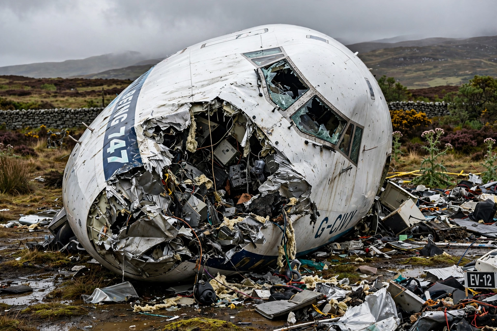

| Pan Am Flight 103 | |
|---|---|
| Date | 21 December 1988 |
| Summary | Terrorist bombing (Semtex in baggage) |
| Site | Lockerbie, Scotland |
| Aircraft | Boeing 747-121, Clipper Maid of the Seas |
| Route | Frankfurt – London Heathrow – New York JFK |
| Total fatalities | 270 (259 on board, 11 on the ground) |

Pan Am Flight 103 was a regularly scheduled transatlantic flight from Frankfurt to Detroit, via London and New York, that was destroyed by a terrorist bomb on 21 December 1988, killing all 243 passengers and 16 crew aboard, and 11 people on the ground in the Scottish town of Lockerbie. The disaster is known in the United Kingdom as the Lockerbie bombing.
The Boeing 747 exploded at cruising altitude about 38 minutes after departing London Heathrow. Investigators determined that a bomb containing the plastic explosive Semtex, hidden inside a cassette player in an unaccompanied suitcase in the forward cargo hold, had detonated. Debris was scattered over more than 2,000 square kilometres of Scotland.
A joint Scottish–American investigation traced fragments, including a timer fragment and clothing from Malta, to Libya. In 2001 a special Scottish court sitting in the Netherlands convicted Libyan intelligence officer Abdelbaset al-Megrahi of murder; his co-accused was acquitted. Libya accepted responsibility in 2003 and paid compensation to the victims' families. Megrahi was released on compassionate grounds in 2009 amid continuing controversy, and died in Libya in 2012.
The bombing led to major tightening of international aviation security, including baggage reconciliation rules. It remains the deadliest terrorist attack in British history. See also Terrorism.